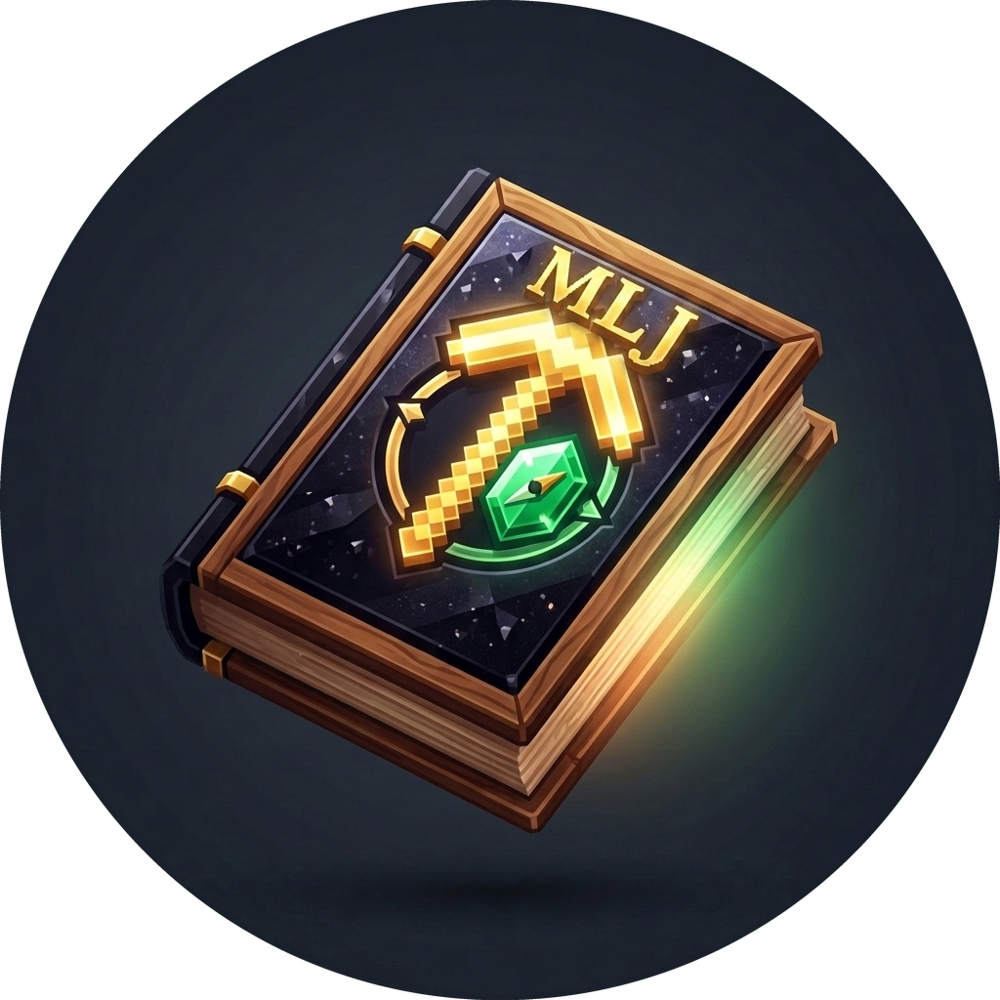

MLJ Companion
In-Game Adventure Synced Live
Journal API Key
Connect
Minecraft Folder Path
Active World Mapping
-- Connect API Key First --
Start Monitoring
Stop
Disconnected
Minecraft: Closed
Sync Console Log
Companion app initialized. Paste your API Key and folder path to start.